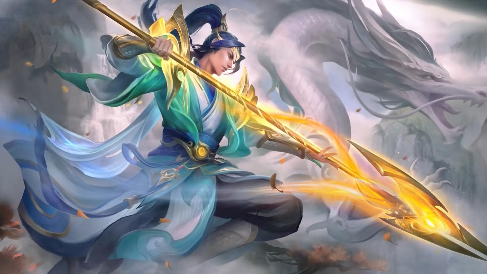

Zilong: "Spear of Dragon"
Summary
Zilong is the second hero you should unlock in the game. He is supposed to help introduce you to the role of melee heroes, since he is a hybrid of Assassin and Fighter. He specializes in deleting squishy heroes, expecially once he assembles his core items. His attack and movement speed tend to be very high, allowing him to easily chase and kill running enemies. He is infamous in high ranks due to being very weak in early-game and teamfights.
Roles

The Assassin role consists of heroes that could easily kill enemies with low health. Great as Junglers.

The Fighter role consists of heroes that have both sustainability and damage. Great as EXP-Laners.
Lore
Zilong comes from the Cadia Riverlands. He is one of the 4 Oriental Fighters of the Great Dragon, along with Ling, Baxia, and Wan-Wan. At a young age, he was caught in a great storm where he lost his parents. The Elder of the Great Dragon Temple found him exhausted, and took him in to train with Ling. It was prophesized that the inheritor of the Dragon Spear would be among them two. When the Great Dragon was tasked to choose the successor, he chose Zilong instead of the more skillful Ling. Zilong quickly proved himself in battles and assisting the commoners in great Calamities. His enemies includes Yu-Zhong, who is a disciple of the evil Black Dragon.